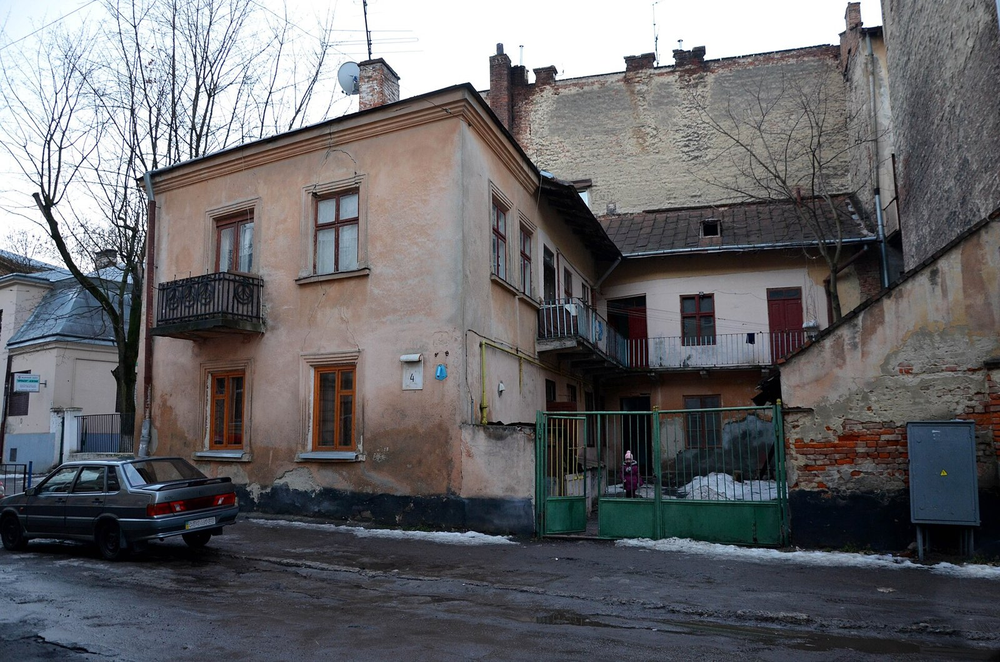
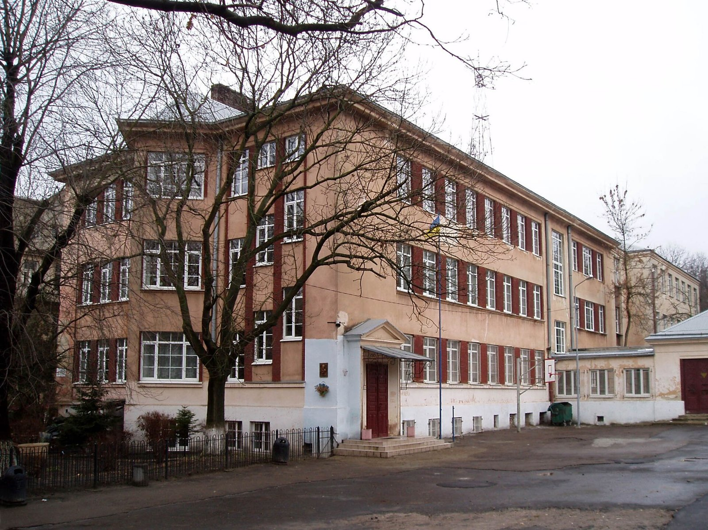

Деталь на фасаді
Оберіть вікно, двері чи орнамент. Опишіть його трьома словами й поясніть, чому він привернув увагу.
Зверни з гамірної Городоцької.
Тут маленька вулиця веде до великих відкриттів — варто лише
придивитися.

Місто можна читати, як книжку. Фасад — це сторінка, стара назва — примітка, а школа — цілий розділ.
Замкнена лежить біля підніжжя Святоюрської гори. В архівному описі вона простежується від середини XIX століття. Її давні назви — Бочна Святої Анни та Грудецка сьлєпа — нагадують, як місто орієнтувалося за сусідніми місцями.
Побачити вулицю на фото 1963–1964 років ↗Обери зупинку. Прочитай її історію.
Знайди деталь, повз яку зазвичай проходиш.
Замкнена → школа № 34 → храм святої Анни → Дім вчених → парк Франка → собор Святого Юра.
*60–90 хв — орієнтовний час із зупинками, без відвідування інтер’єрів. До наступних місць виходь через Городоцьку; не плануй прохід крізь шкільне подвір’я. На підйомі до собору є схили та сходи.
Відкрити пішохідну навігацію ↗
У 1930–1932 роках тут збудували українську школу імені Маркіяна Шашкевича за проєктом Тадеуша Обмінського. Поруч, у будинку № 6, жив її директор Василь Бень — колишній підполковник армії УНР.
Завдання спостерігача: порівняй стриманий фасад школи з декоративними фасадами сусідніх будинків. Як архітектура говорить про призначення будівлі?
Перевірити історію в архіві ↗Чотири запитання про місця маршруту.
Усі відповіді є в історіях зупинок.
Оберіть вікно, двері чи орнамент. Опишіть його трьома словами й поясніть, чому він привернув увагу.
Відкрийте архівне фото Замкненої. Знайдіть одну подібність і одну зміну. Відділяйте спостереження від припущень.
Створіть коротку розповідь про одну зупинку: факт, джерело й власне відкриття. Не видавайте легенду за доведений факт.
Освітній вебпроєкт для 11 класу.
Історія міста, цифрова грамотність
і відповідальне дослідження.
Маршрут і завдання — авторська навчальна інтерпретація. Час — оцінка, а не вимірювання на місцевості. Відвідування інтер’єрів, їхній режим роботи й доступність потрібно уточнювати окремо. Шкільна зупинка передбачає огляд із вулиці.
4 Zamknena Street, Lviv (02).jpg — Aeou, CC BY-SA 4.0.
School № 34, Lviv.jpg — Aeou, CC BY 3.0.
StGeorgeCathedralLviv.JPG — Romankravchuk, CC BY-SA 3.0.
Lviv St Anna church.jpg — Арсен Яковенко, CC BY-SA 3.0.
Ukraine-Lviv-House of Scientists-1.jpg — Alex Zelenko, CC BY-SA 4.0.
Park Franko in Lviv.jpg — Romankravchuk, CC BY-SA 3.0.
Фотографії зменшено та кадровано для макета. Вони показують об’єкти на момент знімання, а не їхній гарантований сучасний стан. Мапа: © учасники OpenStreetMap.